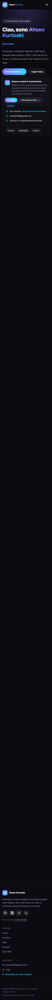
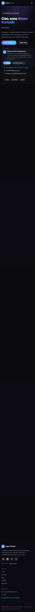
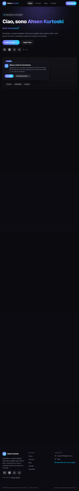
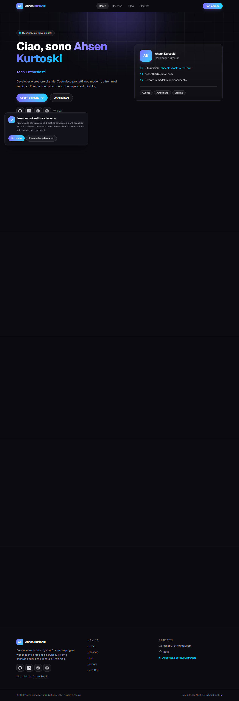
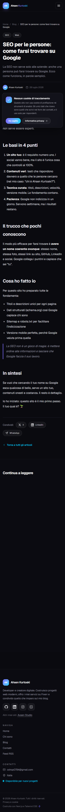
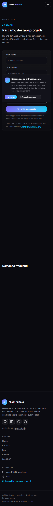
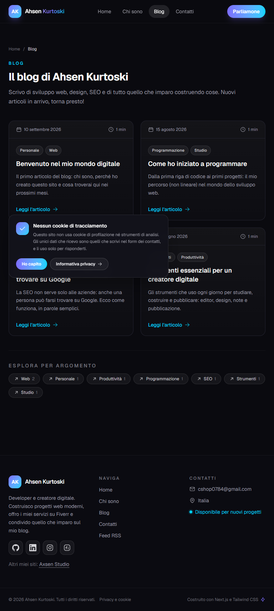
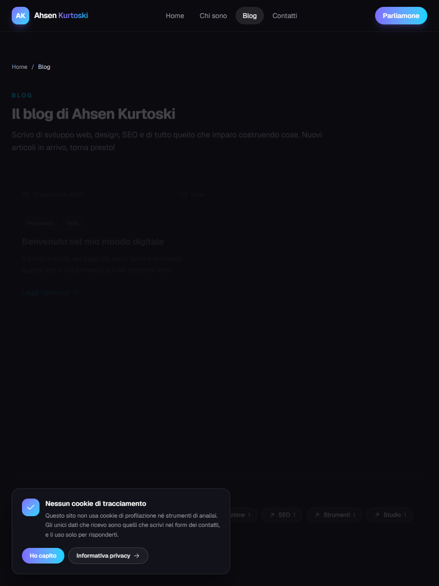

30 settembre 2026 · audit su repo locale + sito pubblicato (all'audit servito da axsenkurtoski.vercel.app, oggi 307 → ahsenkurtoski.vercel.app)
Segue un aggiornamento a fine giornata: fix applicati, committati (c3bc58c) e deployati — i numeri "dopo" sono misurati sul dominio ufficiale.
Aggiornamento 01/10/2026: riscritti title/description di tutte le pagine (M2) e applicati i fix di performance 2–4 (M3), più inlineCss: −25 KB per pagina, un componente client in meno, zero richieste che bloccano il rendering. Tutto committato (f480b5e) e deployato. Verifica PageSpeed Insights dopo il deploy: mobile Perf 100 · LCP 1,7 s · TBT 20 ms · CLS 0,001, desktop Perf 100 · LCP 0,6 s.
ahsenkurtoski.vercel.app risponde 200 e il vecchio dominio fa 307. Durante l'audit era 404 (criticità #1, risolta).
16/16 a 200 sul dominio ufficiale, un solo <h1> per pagina, nessun salto di gerarchia. Audit link: 0 problemi.
Console e rete pulite su tutte le pagine (il 404 della pagina 404 è atteso).
Dopo il deploy (01/10/2026): Perf 100 · A11y 100 · LCP 1,7 s · TBT 20 ms · CLS 0,001 · 0 risorse render-blocking (il rilievo «CSS bloccante, 300 ms stimati» è sparito). Prima del deploy: 96 · 2,4 s · 70 ms. All'audit, in locale: 71 · 3,10 s · 930 ms.
| Run | Perf | A11y | BP | SEO | LCP | TBT | CLS |
|---|---|---|---|---|---|---|---|
| home · mobile 4G | 71 | 96 | 100 | 100 | 3,10 s | 930 ms | ~0 |
| home · desktop | 96 | 96 | 100 | 100 | 512 ms | 144 ms | ~0 |
| home · 3G | 84 | 96 | 100 | 100 | 3,42 s | — | ~0 |
| blog · mobile | 72 | 96 | 100 | 100 | 2,37 s | 1.244 ms | 0 |
| chi sono · mobile | 95 | 81 | 100 | 100 | 2,15 s | 207 ms | 0 |
| contatti · mobile | 84 | 96 | 100 | 100 | 2,18 s | 534 ms | 0 |
| articolo · mobile | 84 | 96 | 100 | 100 | 2,43 s | 529 ms | 0 |
| articolo · desktop | 100 | 96 | 100 | 100 | 482 ms | 0 ms | 0 |
| Run (mobile) | Perf | A11y | LCP | TBT | CLS | TTFB |
|---|---|---|---|---|---|---|
| home (3 run) | 83 · 84 · 86 | 100 | 2,45–2,65 s | 393 · 393 · 546 ms | 0 | 70 ms |
| blog | 97 | 100 | 2,20 s | 132 ms | 0 | 88 ms |
| contatti | 97 | 100 | 2,14 s | 106 ms | 0 | 82 ms |
| home · /chi-sono · /blog · /contatti · /blog/tag/seo | — | 100 | — | — | — | — |
Le due serie non sono misurate nelle stesse condizioni (dominio, periodo e cache diversi): il confronto è indicativo, i valori da guardare sono quelli "dopo".
| Run (deploy attuale) | Perf | A11y | SEO | LCP | TBT | CLS | Primo paint osservato |
|---|---|---|---|---|---|---|---|
| PSI mobile (macchina lenta, benchmark 676) | 96 | 100 | 100 | 2,40 s | 70 ms | 0 | 2.249 ms = LCP |
| PSI desktop | 100 | 100 | 100 | 0,52 s | 0 ms | 0 | 232 ms = LCP |
In 16 run su 16, su quattro ambienti e sei configurazioni, l'LCP osservato coincide con il primo paint: il testo si dipinge insieme alla pagina, non c'è un ritardo proprio dell'LCP da correggere. Il sito passa le soglie Core Web Vitals in laboratorio. Google però non ha dati di campo (CrUX) per questo dominio: traffico troppo basso, quindi nessuna misura di utenti reali da confrontare.
ahsenkurtoski.vercel.app → 200, vecchio dominio → 307; canonical/sitemap/robots coerenti.AhsenKurtoski → 200. Correzione 01/10: gli handle di LinkedIn e Instagram erano ricostruiti a mano e non esistevano (LinkedIn risponde 999 e Instagram 200 a qualunque username, quindi i bot non potevano accorgersene): ora nel codice ci sono i profili veri, linkedin.com/in/ahsen-kurtoski-397b00354 e instagram.com/ahsenstudio, e sono i 4 URL di sameAs.text-zinc-500) → ora text-zinc-400 (~8:1).<h1> e nessun salto di livello; heading-order risolto sulle pagine elenco.label-content-name-mismatch), input form a 16 px su mobile, typing con prefers-reduced-motion e pausa a scheda nascosta.seo:check a ogni build.Reveal senza JavaScript con animazione CSS scroll-driven: 258 → 233 KB per pagina, JS 147 → 145 KB, font 52 → 29 KB. browserslist e font-display: optional provati e scartati con le misure alla mano; inlineCss provato con due build affiancate e adottato (LCP simulato −253 ms in 6 round su 6, +0,35 KB brotli in prima visita).Le voci del 30/09 sono committate e deployate (commit c3bc58c): misure sul live in fixes-applied.md (Lighthouse a11y 100/100 su 5 pagine, audit link 0 problemi; dati grezzi in raw/after-fix/, cartella locale non versionata).
Le voci APPLICATO del 01/10 sono committate (f480b5e) e deployate su Vercel: misure post-deploy su PageSpeed Insights (mobile Perf 100 · LCP 1,7 s · TBT 20 ms) e audit link sul dominio ufficiale a 0 problemi.
Gli scatti si vedono aprendo questo file dal disco (o con un server statico): l'anteprima incorporata serve solo l'HTML e non carica le immagini relative.
Stessa cosa per i report Lighthouse collegati in tabella: la cartella audit/lighthouse/ è locale e non versionata (si rigenera con i comandi in README.md).








Le misure di questa pagina e gli screenshot "all'audit" si riferiscono al sito così come era pubblicato la mattina del 30/09/2026 (dominio allora attivo axsenkurtoski.vercel.app).
A fine giornata fix, sostituzioni e link sono stati committati (c3bc58c), deployati e riverificati sul dominio ufficiale con npm run audit:links e Lighthouse: audit link a 0 problemi, a11y 100/100, la home mobile passa da 71 a 83–86.
La verifica automatica in .github/workflows/verifiche.yml ripete typecheck, lint, build, seo:check e audit link a ogni push.
Il 01/10/2026 è arrivata anche la misura indipendente che mancava (PageSpeed Insights sull'infrastruttura Google, deploy attuale): mobile Perf 96 con LCP 2,4 s e TBT 70 ms, desktop Perf 100 con LCP 0,52 s — e in tutti i run l'LCP osservato coincide con il primo paint. Nessun dato di campo CrUX: il traffico è troppo basso.